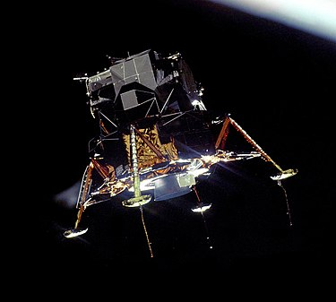
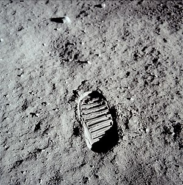
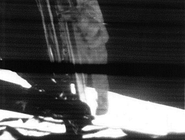
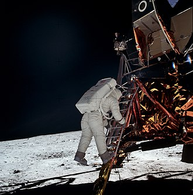
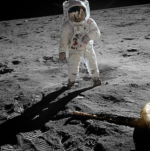
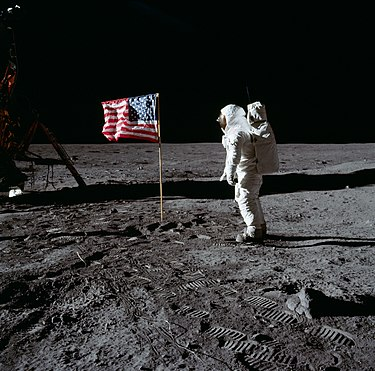
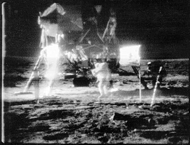

Előzmények
A leszállóhely kiválasztása
Az ötödik Apollo expedíció volt az első olyan űrutazás, amelyhez leszállóhelyet kellett választani. A landolási pont keresése az ember leszállásának előkészítésére korábban felbocsátott Lunar Orbiter szondák fotói alapján történt. [1]
A leszállóhelyet kijelölő bizottság választási kritériumai a következők voltak: [2]
-
Síkság: a leszállóhely a lehető legsimább síkságon terüljön el.
- Ne legyenek kráterek és nagyobb kövek rajta.
- A síkság ne lejtsen 2°-nál jobban.
-
Megközelíthetőség: a leszállás útvonalába ne essen nagyobb domb, hegy, szakadék, vagy mélyebb kráter,
amely a leszállóradar számára hamis magassági adatokat jelezne.
-

Az Apollo-11 leszállóhelye
Üzemanyag: a lehető legkevesebb üzemanyag felhasználásával elérhető legyen.
-
Starthalasztás: a földi start késése esetén is elérhető legyen.
-
Szabad visszatérés: a szabad visszatérés pályáján közlekedő űrhajó hatósugarába essen.
A legfőbb szempont a biztonság volt, melyet elsősorban a legsimább terület kiválasztása biztosított.
A megközelítés és az üzemanyagtakarékosság szempontjai pedig kijelöltek a holdi egyenlítő mentén egy 10° – délre is
5°, északra is 5° – széles sávot, ahová a keresés kiterjedt.
Természetesen csak az innenső, állandóan látható oldal jöhetett szóba, szintén biztonsági megfontolások
(a rádiókapcsolat egyszerűbb fenntartása) miatt. A keresési terület tovább szűkült, amikor a keleti
félgömböt jelölték ki a kutatók, mivel a holdutazók nyugatról keletre kerülték meg az égitestet és
a keleti félen több sík mare terület mutatkozott. A 10° széles és 90° hosszú sávot tovább szűkítette az
a holt zóna, amelyet a holdkomp befut a Hold mögül előbukkanó űrhajóval való rádiókapcsolat
újra felépítéséhez szükséges idő alatt. Ezek alapján a kritériumok alapján összesen öt lehetséges,
ezen belül három fő jelöltet választottak ki. Ezen jelöltek újbóli,
részletesebb vizsgálata később az Apollo–8 és az Apollo–10 űrhajósainak egyik fő feladata lett.
Bormanék repülése után még az „1-es leszállóhely” tűnt befutónak,
a Nyugalom Tengere keleti részén – abban a zónában, amely a legkeletibb hely volt,
ahol űrhajó egyáltalán leszállhat –, végül az Apollo–10 fotói a „2-es leszállóhelyet” kedvezőbbnek mutatták.
A holdgömb közepe táján fekvő „3-as” gyakorlatilag kiesett, a választás a Mare Tranquillitatisra esett,
annak is a nyugati oldalán fekvő, a Moltke és a Sabine kráterek között fekvő részére [3][4]
A legénység kiválasztása
Az Apollo–11 személyzetének kiválasztásakor az alkalmasságon kívül,[5] nem kisebb volt a fő kérdés,
hogy ki lesz az első ember, aki a Holdra lép, ki lesz az, aki örökre beírja magát a történelembe.
A kiválasztás a NASA személyzeti ügyekért felelős vezetője,
Deke Slayton és az Űrhajós Iroda vezetője, Alan Shepard feladata volt.
A program kezdetétől fogva létezett egy legénységi rotáció, amelyben először nagy tapasztalatú,
veterán űrhajósok repültek. Tartalékként szintén tapasztalt Gemini-legénységek szerepeltek és
a rotáció szerint ezek a tartalékok két repülés kihagyása után kerültek repülési státuszba.
Így a repülés várományosai az Apollo–8 tartalék személyzetének tagjai voltak.
Slayton és Shepard a rotációba való beválogatáskor eleve úgy jelölte ki a legénységeket,
hogy amikor az első holdra szállás kísérletei jönnek, akkorra olyan űrhajósok kerüljenek sorra,
akik már jártak az űrben. Másrészt volt tapasztalatuk űrrandevú és dokkolás végrehajtásában és
esetleg valamilyen nem várt helyzet megoldásában.
Jelmondata szerint „mindenkinek képesnek kell lennie mindenféle repülési feladat megoldására”.
Ezek alapján az Apollo–7, –8, –9 tartalékai egyaránt teljesen alkalmasak voltak az első holdra
zállásra, mi több,
ugyanezen repülések fő személyzeteiből is többen szóba jöhettek, igaz rotáción kívül. [6]
Az Apollo–8 tartalék legénysége eredetileg Pete Conrad, Dick Gordon és Alan Bean volt,
így ők voltak a „G”-jelű repülés (azaz a holdra szállás első kísérletének) várományosai.
Aztán az eredeti Apollo–8 – a „D” repülés, a holdkomp Föld körüli pályán történő berepülése
– és az Apollo–9 – az „E” repülés, egy nagy magasságú teszt – helyet cseréltek,
hogy az Apollo–8 a szovjeteket megelőzve a Holdhoz repülhessen.
Ekkor vált a holdra szállás első számú esélyesévé Neil Armstrong, Buzz Aldrin és Jim Lovell.
Aztán Lovell átvette Michael Collins helyét az Apollo–8 parancsnoki modul pilótájának székében,
mivel Collinsnak egy kényszerű műtét miatt ki kellett hagynia az első holdrepülést. Betegségéből felgyógyulva ő is csatlakozhatott Armstrong és Aldrin mellé,
így alakult ki a végleges hármas
Deke Slayton azonban szívesen felrúgta volna a rotációt,
csak hogy a történelmi feladatra egy nagy egyéniséget, a legtapasztaltabb veterán
űrhajóst küldhessen fel. Első számú jelöltje a korábban az Apollo–1 tüzében elhunyt Virgil
„Gus” Grissom volt, egészen annak haláláig. Ezek az űrhajósok a következők voltak:
Wally Schirra (Apollo–7), Frank Borman (Apollo–8), Jim McDivitt (Apollo–9).
Aztán ahogy ezek a parancsnokok lerepülték a maguk Apollo küldetését, sorban jelentették be,
hogy nem kívánnak több űrrepülést tenni. Így mivel nem maradt „kimagasló” egyéniség,
maradt a rotáció, amelyben az Armstrong–Aldrin–Collins hármas állt elöl.
Külön jó pontnak számított, hogy Armstrong civil volt, nem katona, ezzel a militarizmus
látszatát is távol lehetett tartani a történelmi holdra szállástól.
Így kapta meg végül Armstrong a különleges lehetőséget.
Slayton 1969. január 6-án közölte Armstronggal, hogy őt jelöli az Apollo–11 parancsnoki beosztására,
három nap múlva pedig a NASA hivatalosan is bejelentette a jelölést.
Később az óriási médiafelhajtást kevésbé jól viselő Aldrin megpróbálta átkérni magát egy másik, kevésbé történelmi és kevesebb médiafigyelmet magára vonó, ám tudományos szempontból fontosabb repülésre. Slayton azonban világossá tette számára, ha most nem repül, később sem fog,
így Aldrin visszakozott és a kijelölt legénység változatlan maradt.
A start előtt egy héttel Tom Paine, a NASA elnöke példátlan ajánlatot tett Armstrongnak,
megígérte, hogy ha valamilyen probléma miatt meg kéne szakítani a küldetést,
úgy a következő expedíción is ők repülhetnek. A NASA ezzel a kockázatot szerette volna csökkenteni,
mivel a berepülőpilóták az átlagosnál sokkal merészebbek, valamint az Űrhajós Irodához hasonló,
katonai alapokon nyugvó szervezetekben sokszor már egészségtelen versenyszellem uralkodik.
Paine a kivételes ajánlattal próbálta kissé csökkenteni a parancsnokra nehezedő nyomást,
hogy baj esetén könnyebben döntsön az esetleges – a többiek szemében kudarccal egyenértékű
– megszakításról és ne vállaljon felesleges rizikót, ami akár tragédiába is torkollhat.
Hívójel- és emblémaválasztás
A rádió hívójelek kiválasztása – amelyek a parancsnoki űrhajó és a holdkomp nevével megegyeznek
– hagyományosan a legénység privilégiuma volt.
A gyakorlások során az Armstrong-féle csapat a Jégkása és a Szénakazal neveket választotta,[8]
ám amikor a hivatalos jelölés megtörtént, lecserélték a kissé komolytalan neveket a történelmi
küldetéshez illőkre. Így kapta a parancsnoki űrhajó a Columbia nevet, amelyet elsősorban
Jules Verne Utazás a Holdba és Utazás a Hold körül című regényei cselekményével és a Columbiad
ágyúval meglevő asszociáció ihletett. De a szónak további jelentései is voltak, mint például a
hasonló nevű 18. századi legendás amerikai hajó,
amely az északnyugati ismeretlen tengeri területeket kutatta.
Magára az Egyesült Államokra is utalhatott a név,
hisz Columbia Amerika nőnemű költői neve is egyben a kultúrában.
A holdkompot pedig az Eagle névre keresztelték (pontosabban a különválást követően ezen
a hívójelen kommunikáltak az utasaival), amely egyértelmű hazafias utalás Amerikára,
amelynek a címermadara a fehérfejű rétisas
Szintén az űrhajósok dolga volt legénységi emblémát tervezni.
A legénység az egész program legminimalistább logóját tervezte,
elhagyva belőle minden sallangot – még a saját nevüket is
– hogy egyértelműen szimbolizálják az üzenetet:
az Egyesült Államok békével érkezett a Föld lakóinak nevében a Holdra.
A szimbólumrendszerben egy fehérfejű rétisas száll le egy kráterszaggatta holdi tájon,
karmai között
– a béke jeleként
– olajágat szorítva, háttérben a Földdel és az Apollo–11 felirattal.
Gyakorlati kiképzések a Földön

Az űrhajósok a holdséta tevékenységeit szimulálják még a Földön
Az Apollo–11 minden korábbinál bonyolultabb expedíciónak készült,
így Armstrongéknak a legkomplexebb tréningprogramon kellett átesniük a normál űrhajós kiképzés
mellett. A parancsnok valós kiképzést kapott a holdkomp leszállására az
LLTV (Lunar Lander Training Vehicle – Holdi Leszállóegység Gyakorló Eszköz) nevű furcsa szerkezettel.
Ez a gép egy függőlegesen beépített sugárhajtóművel és további rakétahajtóművekkel
ellátott csővázas repülőeszköz volt, amely a holdkomp függőleges leszállásának szimulációjára
szolgált. A függőleges sugárhajtómű szolgált a Föld gravitációjának ellensúlyozására,
az 1/6 erősségű holdi gravitáció érzetének megteremtésére,
a rakétahajtóművek pedig a holdkomp (LM) épített manőverező fúvókák másai voltak.
Ezzel a géppel kellett a leendő holdra szálló űrhajósoknak begyakorolniuk a holdi
leszállás legvégső fázisát. A gép sajnos nagyon megbízhatatlannak bizonyult,
egy ízben Armstrong kis híján meghalt benne, amikor a hajtómű elromlott,
és alig 100 méterről az eszköz lezuhant.
Szerencsére az űrhajós a pillanat tört része alatt felismerte a bajt és katapultált.
A repülési műveletek begyakorlására – a korábbi küldetésekhez hasonlóan
– széles körben használták a parancsnoki űrhajó- és a holdkomp szimulátorokat.
Ezen gyakorlások alatt az út során előforduló tervezett műveleteket (elsősorban a dokkolásokat)
lehetett készségszintig begyakorolni,
valamint rengeteg vészhelyzeti eljárást próbáltak ki segítségükkel az űrhajósok és az irányítás.
Ez utóbbi esetben a szimulátor kezelőszemélyzete az űrhajósok tudtán kívül elrontott
valamilyen repülési paramétert – műszerhibát, vagy esetleg rendellenes űrhajó működést szimulálva
–, és az űrhajósoknak ezekre a váratlan helyzetekre is helyes megoldást kellett találni.
Armstrong és Aldrin – eltérően a korábbi küldetésektől
– rengeteg lehetőséget kapott a holdi leszállás gyakorlására a szimulátorban.
A szerteágazó terepgyakorlatok szintén új színfoltot jelentettek a kiképzésben.
Ezek egyik fajtája volt a holdműveletek szkafanderben történő gyakorlása,
amelynek során egy hatalmas NASA hangárban kialakított,
homokkal borított területen kellett a végrehajtandó műveleteket szimulálni az
űrhajósoknak egy holdkomp makettel és a felküldendő eszközök egy-egy gyakorló
példányával. A másik szimulációs terület a mozgás gyakorlása volt,
a Hold gyengébb gravitációs környezetéhez való szoktatás.
Ehhez az űrruhás űrhajósokat úgy függesztették fel rugalmas szalagok segítségével,
hogy a nehézségi erőt a valóságos gravitáció egyhatodának érezzék.
Ezek a gyakorlások többnyire sikertelenek voltak, mert a felfüggesztő szalagok,
rugók nagyban korlátozták a mozgást és azt mutatták,
hogy a holdfelszíni munka cseppet sem lesz könnyű.
A geológiai terepgyakorlatok ettől eltérően egészen más típusú kiképzést jelentettek.
Nagyon kevés ilyen gyakorlatra jutott idő a túlfeszített felkészülési tervben,
de meg kellett ismertetni az űrhajósokat valós körülmények között az egyes kőzetfajtákkal és
előfordulásukkal még idelenn a Földön. Ezért a NASA sivatagi gyakorlatokat szervezett,
amelyen Armstrongék is részt vettek.[14][15] Sajnos néhány esetben a
sajtó túlzott érdeklődése meghiúsította a gyakorlásokat,
mikor tudomást szerezve egy-egy ilyen kitelepülésről,
tömegesen jelentek meg a helyszínen. Helikopterrel figyelték a lenti munkát,
megakadályozva a nyugodt tanulást, vagy akár az űrhajósok és a tanár egymás közötti kommunikációját.
Luna–15
A Hold eléréséért folyó versenyt a Szovjetunió elvesztette az N1 rakétáinak robbanásai miatt,
de utolsó esélyként megpróbálta még csökkenteni a holdra szállás jelentőségét azzal,
hogy felküld egy űrszondát, ezzel kérdőjelezve meg az emberek feljuttatásának szükségességét.
A Luna–15 küldetése anyagminta visszahozása lett volna a holdfelszínről,
mégpedig az elképzelt időrend szerint az Apollo–11 visszatérése előtt.
A Szovjetunió, amikor látta a holdverseny elvesztését,
váltott propagandájában és azt kezdte kihangsúlyozni,
hogy az amerikaiak temérdek felesleges pénzt költenek és emberek életét veszélyeztetik a
holdra szállással, amikor annak tudományos céljait egyszerűen és olcsón teljesíteni lehet
mintavevő holdszondák feljuttatásával is. Az állítás demonstrálására – és az Apollo-program
tudományos megkérdőjelezésére – 1969. július 13-án elindították a szondát, amely Armstrongék előtt,
1969. július 17-én állt Hold körüli pályára. Ezután azonban irányítási problémák léptek fel és
a leszállás elhúzódott. Mivel a két küldetés időben fedte egymást, a szovjetek kénytelenek voltak
átadni a repülési adatokat a NASA-nak, bizonyítván, hogy nincs ütközésveszély a szonda és az
űrhajóegységek között. Ez volt az első űrkutatási célú közvetlen adatcsere a szovjet és
amerikai fél között. Végül a Luna–15 leszállás helyett 1969. július 21-én egy hiba folytán
becsapódott a Holdba valahol a Mare Crisiumon.
A repülés
Felszállás

Az Apollo–11 indítása
Az Apollo–11 startprocedúrája műszaki értelemben 1969. május 20-án,
két nappal az Apollo–10 startját követően kezdődött, ekkor szállították ki
a kész rakétát a
VAB összeszerelő csarnokból a 39A indítóállásba az 1-es számú Mobil Indítótoronnyal
Az indítási folyamat hivatalos kezdete T – 28:00:00-kor,
1969. július 14-én 22:30 (UTC) (floridai helyi idő szerint 17:30-kor) kezdődött.
A 28 órás hivatalos és a 40 óra 2 perces valós időtartam között egy hat és egy fél
órás tervezett visszaszámlálási szünet volt,
amelyből a hosszabbik szünet végül 11 óra 32 percesre húzódott el.
Az űrhajósok 2 óra 40 perccel indulás előtt foglalták el helyüket az űrkabinban.
Az Apollo–11 1969. július 16-án 14:32-kor (UTC), (helyi idő szerint 9:32)
emelkedett a magasba a Cape Canaveralon található Kennedy űrközpontból.
Odaút és Hold körüli pályára állás
Az utazás első lépcsője a Föld körüli pálya volt,
másfél fordulatnyi időt töltöttek itt el az űrhajósok,
amíg minden rendszert le nem ellenőriztek. A rendszertesztek után – miután
megbizonyosodtak róla, hogy minden működőképes – az S-IVB újraindításával gyorsítottak.[20]
Az űrhajó a szabad visszatérés pályáján indult a Hold felé.
Az első manőverre fél órával a holdirányú gyújtást követően került sor,
ekkor választották le a parancsnoki űrhajót az S-IVB-ről.
Ezután az űrhajósok megkezdték a holdkomp-retrakciót, azaz a holdűrhajó
kihúzását az S-IVB fokozat felső részén levő holdkomp adapterből.
Ehhez a rakétafokozatról levált és néhány méterre eltávolodott anyaűrhajó a
kereszttengelye körül 180°-os fordulatot végzett (azaz innentől kezdve menetiránynak háttal repült), majd az orrán levő dokkolószerkezettel megcélozta a holdkompon levő fogadó egységet és összekapcsolódtak. Következő lépésként a parancsnoki hajó kormányhajtóműveinek húzóerejével és
az adapterbe épített rugós mechanizmus segítségével kihúzták a holdkompot a
rakétafokozatból.
A fenti manőverek miatt az űrhajóegyüttes 6 m/s-ot lassult,
ezt később pályaközi korrekcióval kellett kompenzálni,
hogy a hajó végig a szabad visszatérés pályáján haladjon. [23]
Ám egyúttal a műveletek olyan jól sikerültek, hogy a tervezett
négy korrekció közül csak egyet kellett végrehajtani.[21] Houston
közben az S-IVB hajtóművét indította újra távirányítással,
hogy a kiürült rakétafokozat véletlenül se legyen útban a későbbiek során.
A fokozat három nap múlva elhaladt a Hold mellett, és Nap körüli pályára állt.
Az Apollo–11 három napig repült a Hold felé,
mire elérte azt és az űrhajósok megkezdhették a pályára állást körülötte.
Leszállás a Holdon
A leszállási folyamat a holdkomp felélesztésével kezdődött.
Erre a műveletre azért volt szükség, mert a leszállóegység készleteivel
(oxigén, áram, hűtővíz stb.) nagyon takarékosan bántak a tervezők,
csak annyi volt mindenből, amire odalenn a holdfelszínen szükség lehet
– plusz persze a le- és felszállás szükségletei némi, de nem túl sok tartalékkal –,
ezért a lehető legkésőbb kezdték a készletek használatát, így az űrhajó a lehető
legtovább maradt „stand by” üzemmódban. A leszállást végző parancsnok és
holdkomppilóta a 10. keringés során mászott át a holdkompba és kezdett
az üzembe helyezéshez. A műveletekhez hozzátartozott a beöltözés is, amely
önmagában egy óráig tartott, innentől kezdve viszont az űrhajósoknak tilos
volt levenniük az űrruhájukat (az odaúton könnyű kezeslábasban utaztak a holdutazók),
másfél napig szkafanderben voltak kénytelenek dolgozni. [16]
A leszállás érdemi része a 13. keringésben kezdődött. Először – a Hold mögött,
rádiótakarásban – Armstrongék leválasztották a holdkompot a parancsnoki űrhajóról. [21]
Ebben a szakaszban pillantották meg először a terminátor (a nappali és éjszakai
féltekét elválasztó fény-árnyék határvonal) mögül előbukkanó leszállóhelyet.
A rádiócsendből előbukkanva aztán jelentették Houstonnak, hogy minden rendben
(a folyamat során minden egyes lépést jelenteni kellett, és csak a sikeres
végrehajtás után kaptak az űrhajósok engedélyt egy újabb repülési szakasz
elindítására): [25]
„A Sasnak szárnyai vannak.”[

Armstrong piruettet végez a holdkomppal a Columbia ablakai előtt, hogy Collins ellenőrizhesse a sérülésmentességet
Ezután Collinsnak kellett szemrevételeznie a holdkompot, megbizonyosodni
a sérülésmentességről, valamint arról, hogy a lábak megfelelően kinyíltak-e
és a rögzítőelemek a helyükön vannak-e.[27] A lábak az S-IVB fokozatban a
helytakarékosság miatt behajtott állapotban utaztak, és csak a Holdnál
terpesztették szét őket leszálló konfigurációba.[28] Helyzetük pedig
kulcsfontosságú volt, hiszen ha valamelyik a leszálláskor becsukódott volna,
az a biztos halált jelentette volna Armstrongék számára, ezért a két űrhajóegység
egy darabig még pár méterre egymástól kötelékben repült tovább, hogy a parancsnoki
egység pilótája megfigyelhesse a holdkompot, míg a parancsnok a tengelye körül
körbeforgatta azt. Mikor ez a teszt lezajlott, kezdődhetett a fékezés, valamint
a parancsnoki egység más pályára állítása (a parancsnoki hajót el kellett
távolítani a holdkomp közeléből, nehogy ütközzenek, illetve egy kicsit
magasabb pályára emelve az az előnye is megvolt a manővernek, hogy a
parancsnoki űrhajó előbb ért ki a következő körben a Hold mögötti
rádiócsendből és reléként szolgálva
hamarabb kaphatott telemetriai adatokat az irányítás a leszállás közben a holdkompról).[29]
A fékezés – a repülési magasság csökkentése – a 14.
keringésben történt meg, ismét a Hold mögött. Az űrhajósok 15 000 méter
magasságig ereszkedtek a holdfelszín fölé. Így bukkantak ki a Hold mögül,
ekkor még könnyen vissza lehetett volna jutni a parancsnoki hajóhoz, ha valami
baj van, ez egyfajta választóvonal volt a leszálláson belül, és külön engedély is
kellett Houstontól a leszállás utolsó fázisának végrehajtására. Ám problémák támadtak
a telemetriai adatok letöltésével, az adás szakadozottan érkezett,
Gene Kranz repülésirányító nem tudta kiadni a leszállási engedélyt. Az irányítóteremben
tartózkodó Pete Conradnak támadt az a mentőötlete, hogy Armstrongék döntsenek kicsit az
űrhajó hossztengelyén, és így a rádióantennájuk nagyobb szögben nézhet a Földre,
javítva a vételen. Az ötlet használt, a beérkező adatok alapján az irányítás kiadhatta
a végső engedélyt a leereszkedésre.
Armstrongék ekkor növelték a fékezőhajtómű teljesítményét és egyre lejjebb ereszkedtek. [30]
A következő fontos állomás a radar bekapcsolása volt (a felszín feletti
magasságot radarral állapították meg és ennek az eszköznek az adatai jelentették
a referenciát a fedélzeti számítógép számára). 12 000 méteren jártak, amikor a radar
először érzékelte a holdfelszínt. Azonban rögtön hibát jelzett a komputer, a radarjelek
túltöltötték a memóriát, az irányításnak pár másodperce volt eldönteni,
hogy megszakítsák-e a küldetést. Egy komputermérnök jelezte, hogy a probléma
nem komoly, a hiba ellenére biztonságosan folytatható a leszállás.
Később, 3000 méter magasan megismétlődött ugyanez a probléma,
de ugyanúgy veszélytelennek ítélte meg az irányítás és továbbengedte a leszállást. [30]
A leszállási görbe ballisztikus ívet rajzolt,
először a felszínnel párhuzamosan, ablakokkal lefelé nézett az Eagle,
majd egyre lassulva lassan függőleges helyzetbe állt, a legvégső ereszkedést
pedig már tökéletesen függőlegesen kellett megtenni, hogy az űrhajósok
elkerüljék a borulásveszélyt. Ezt a repülési pályát a számítógép vezérlésével
lehetett végrehajtani, emberi kéz képtelen lett volna végig olyan precíz
parancsokat adni és olyan optimális üzemanyag-felhasználást biztosítani,
mint a számítógép. A leszállóhely tulajdonképpen nem egy pont, hanem egy
, némi vezérlési hibával is számoló ellipszis volt,[31] amelynek középpontja
volt az optimális leszállópont. Armstrongéknak a rendszerek felügyelete volt
a feladata, valamint a legutolsó fázisban a számítógépnek adott parancsokkal
a leszállópont korrigálása. Végső esetre pedig a kézi vezérlés lehetősége – a
számítógép kiiktatása – is megmaradt. 300 méter magasságra érve élesen
kirajzolódott a leszállópont és környéke, ami Armstrongot kemény
elhatározásra késztette: a leszállóponton hatalmas, autó nagyságú sziklák
és nagy kráterek voltak, a biztos felborulással fenyegettek. A parancsnoknak
nem maradt más választása, mint áttérni kézi vezérlésre, mivel a finom
pályamódosítások kevésnek látszottak a sziklamező elkerülésére. Aldrin a
műszerfalon látható adatok hangos bemondásával segítette a parancsnokot,
akinek nem volt ideje egyszerre a műszereket és a kinti tájat is figyelnie.
A kézi vezérlés megnövekedett üzemanyag-felhasználással párosult,
és ez ilyen alacsonyan már megnövekedett kockázatokat vetett fel, 50
méternél húzódott a határ, ami alatt már nem lehetett vészeljárással
leválasztani a holdkomp leszállófokozatát és begyújtani a felszálló
hajtóművet (egyszerűen nem lett volna idő a folyamatra), így ha ott
fogy ki az üzemanyag, az űrhajó biztosan lezuhant volna. Armstrong
éles manőverezésbe fogott – a szorult helyzetre jellemző, hogy még
arra sem maradt ideje a parancsnoknak, hogy az irányításnak jelezze
a kézi vezérlés tényét – és elkormányozta a hajót a sziklamezőtől
egy simább terület felé. Közben figyelmeztető jelzés gyulladt a
műszerfalon – és mivel a telemetrián át az irányítás is megkapta a jelzést,
a CapCom is rádiózott figyelmeztetésül: 60 másodperc repülésre elegendő
üzemanyag maradt. Armstrong rendületlenül folytatta a kézi vezérléssel
történő süllyedést, de még mindig magasan volt és még mindig volt oldalirányú
sodródás is, amelyet meg kellett állítani. Az üzemanyag 30 másodpercnyi
mennyiségre fogyásánál újabb figyelmeztetés gyulladt a műszerfalon.
Ekkor jelentette kisvártatva Aldrin: >[32][33]
„Kontakt fény.”[32]"
A leszállótalp aljáról lelógó, nagyjából másfél méteres (67 hüvelyk hosszú) érzékelőpálcák egyike elérte a talajt, amit egy lámpa jelzett a kabinban. E jelzésre a parancsnoknak le kellett állítania a hajtóművet, ám Armstrong elmulasztotta
ezt megtenni. Kisvártatva újabb rádióüzenet érkezett, ezúttal Neil Armstrongtól: [32]
„Houston, itt a Nyugalom Bázis. A Sas leszállt.” [32]
A leszállás 1969. július 20-án 20:17-kor (UTC) történt meg.
Az egyetlen szépséghiba Armstrong késlekedése volt a hajtómű leállításával, amellyel azt kockáztatta, hogy a hajtóműharang alá beszorul a gázsugár és szétrobbantja, de szerencsére ez nem történt meg.
A tartályban végül 20 másodpercre elegendő hajtóanyag maradt. [34]
Leszállás utáni teendők
A Sas talajt érése után az űrhajósoknak azonnal neki kellett látniuk a
felszállás előkészítésének. Biztonsági okokból ugyanis az volt a logikusabb, hogy ha bármi váratlan probléma történne, inkább mihamarabb el tudják hagyni a holdfelszínt és elérjék a biztonságot nyújtó parancsnoki űrhajót, mintsem kockáztassanak a felszínen. Ezért először nem a holdi tevékenységekhez láttak hozzá,
hanem a holdkomp felszállásra történő előkészítéséhez. [35]
A felszállási előkészületek végén,
a holdséta (EVA) előkészületek előtt Aldrin váratlanul furcsa szöveget mondott a rádióba:
„Itt a holdkomppilóta beszél. Szeretném megragadni az alkalmat,
hogy minden ember, aki hallgat bennünket, legyen az bárki és legyen bárhol,
álljon meg egy pillanatra és gondolkodjon el az elmúlt néhány óra eseményein,
és adjon hálát mindenki a maga módján.” [36]
Aldrin csak évek múltán mondta el, hogy ezután úrvacsorát vett.
A kenyeret és a bort Dean Woodrufftól kapta, aki akkoriban a Websteri
Presbiteriánus Gyülekezet vezető pásztora volt, mely gyülekezetnek
Aldrin egyik elöljárója volt.[37] A holdkomppilóta senkinek sem szólt előre
a tervéről – még felesége előtt is titokban tartotta a szándékát – és azért
fogalmazott ilyen kétértelműen, mert sokak vitában voltak azzal, hogy az
űrteljesítményekkel járó nyilvánosságot az űrhajósok – magánakciók
keretében – vallásos üzenetek közreadására használják fel.
A NASA az idő tájt még mindig perben állt egy ateista aktivistával, amiért az
Apollo–8 űrhajósai a Teremtés Könyvéből idéztek az 1968. karácsonyi holdutazásukkor. [38]
A holdséta
Kiszállás

Aldrin lábnyoma a Holdon
A műveleti terv szerint egy 8 órás pihenőidő következett volna, ám Armstrong é
s Aldrin felvetette, hogy elég fittnek érzik magukat, felesleges lenne pihenni,
inkább engedélyezze az irányítás a holdsétát rögtön, a tervezettnél előbb. Az irányítás rövid gondolkodás után engedélyt adott.[35] Ugyan nincs egyértelmű bizonyíték rá, de valószínű, hogy az eredeti terv is a leszállást követő azonnali holdsétáról szólt, a pihenőidő csak biztonsági időtartalékként került a tervbe, hogy ha csúszna a leszállás a tervezett időrendhez képest, ne úgy kelljen hírt adni, miszerint az Apollo–11 holdsétája a tervezett időhöz képest később kezdődik. Ehelyett ki lehetett használni a korábbi kiszállás propagandaértékét (a tervezett idő előtt sikerül kiszállni a Holdra).[39] Az űrhajósok az engedély birtokában nekiláthattak a holdséta előkészítésének, ami nagyjából 2,5–3 órás tevékenység volt. Ennek keretében visszavették a leszállás után levett sisakjukat, illetve az üvegbúra formájú sisak tetejére rácsatolták az ún. felső sisakot, a nagy, aranyozott ellenzőt tartalmazó fehér fémgömböt, amelyet csak kinn a felszínen alkalmaztak. Aztán magukra öltötték a hátizsákjaikat, átcsatlakoztatták a holdkomp forrásairól a hátizsákra az oxigén, hűtővíz és áram csatlakozóit, nyomástesztet végeztek. Végül elkezdték csökkenteni a kabinnyomást. Az oxigén csak lassan távozott a kabinból. Közel 40 perc telt el, amikor a nyomás csökkenése megállt az eredeti nyomás nagyjából tizedén, ami az ajtót még mindig szorosan a helyén tartotta. Ekkor Aldrin óvatosan elfeszítette a kabinajtó egyik sarkát és a résen át kiillant a maradék oxigén.[7] A leszállástól 6 óra telt el az ajtó kinyitásáig,
a holdséta (EVA) 1969. július 21-én 2:51-kor (UTC) vette kezdetét.[40]

Armstrong lefelé mászik a létrán
Az előre meghatározott sorrend szerint először a parancsnok kezdte el a kiszállást.
Ehhez Armstrongnak térdre kellett ereszkednie és hátrálva kellett kimásznia a kabinból.
A hátizsák többször is elakadt a művelet során, Aldrinnak kellett segítenie.
Armstrong ekkor kijutott az ún. tornácra – a kabinajtónál elhelyezett kis platformra,
amely a létra tetején volt –, ahol felegyenesedhetett. Itt egy bowdent meghúzva lenyitotta az alatta a holdkomp oldalán elhelyezett MESA-t (a holdkomp csomagtartóját), amelyre a tévékamerát is ráerősítették.[35] Ez az aktus egyben aktiválta a kamerát is, ettől a perctől kezdve – a Deep Space Network ausztráliai óriás parabolaantennáján keresztül – megindulhatott a tévéadás is.[41] Armstrong – immár a nagyjából egymilliárdnyi tévénéző szeme láttára – óvatosan lemászott a létrán, majd az utolsó fokról leugrott a leszállótalp tányérjába. Ekkor jelezte, hogy a talp nem csúszott össze, ahogy a mérnökök várták, hanem derékmagasságban tartotta az utolsó létrafokot. Ezt bizonytalannak ítélte meg, ezért mielőtt folytatta volna a holdsétát, inkább visszaugrott az alsó fokra, hogy vissza tud-e jutni. Mikor sikerrel bizonyosodott meg a visszajutásról, ismét leugrott
a tányérba és a holdpor tanulmányozásába kezdett, cipője orrával turkálva a porban.[42]
– A létra alján vagyok. A holdkomp lábai talán 1–2 hüvelyknyire mélyedtek a porba, bár a talaj nagyon, nagyon finom szemcséjű, ahogy közelről láthatom. Majdnem olyan, mint a púder. A por nagyon finom.
– Most lelépek a talpról.[43]
Aztán a parancsnok lelépett a Hold felszínére. 1969. július 21. 2:56 (UTC) volt ekkor.
Ekkor hangzott el Armstrong híressé vált mondata:
„Kis lépés egy embernek, de hatalmas ugrás az emberiségnek.” („That's one small step for [a] man, one giant leap for mankind.”)[35][42]
Armstrong legelső dolga a felszínen a holdkomp körbejárása volt,
hogy megbizonyosodjon az űrhajó sérülésmentességéről, valamint arról,
hogy stabilan áll-e a felszínen. Szerencsére a holdkomppal semmiféle probléma nem volt. Ezután a parancsnoknak biztonsági mintát kellett vennie. Ez azt a célt szolgálta, hogy ha bármilyen váratlan okból a tervezettnél előbb kellett volna visszaszállni a holdkompba, akkor is haza tudjanak hozni némi kőzetmintát az űrhajósok a Holdról. Ehhez Armstrong egy hosszú nyelű lapáttal némi holdport és néhány kavicsot tett egy kisebb, zárható zacskóba és a mintát a zsebébe tette. Mozgás közben megállapította, hogy még a vártnál is könnyebb a mozgás. Miután a parancsnok biztonságosnak ítélte a kintlétet,
akkor következhetett a holdkomppilóta felszínre lépése is.[41]
A holdkomp pilótája is a felszínre lép és a Holdon jár

Aldrin a holdfelszínre tart
Hozzávetőleg húsz perc múltán Aldrin is engedélyt kapott a kiszállásra.
A holdkomppilóta is lassan kihátrált a kabinból, majd lemászott a létrán,
végül lelépett a leszállótalpról. Armstrong lelkesen fogadta,
a lemászásról remek fotósorozatot készített, majd véleményt várt társától. Aldrin egy rövid, de Armstrongéhoz hasonlóan híressé lett mondattal foglalta össze érzéseit:[7] A leszállástól 6 óra telt el az ajtó kinyitásáig, a holdséta (EVA) 1969.
július 21-én 2:51-kor (UTC) vette kezdetét.[44]

Aldrin is a Holdon
„Varázslatos sivárság.”[44]
A második űrhajós felszínre lépésével kiteljesedett a munka. Előzőleg Armstrong már levette a MESA-ra erősített kamerát és a holdkomptól 12 méterre egy háromlábú állványra állította. Aldrin a mozgással ismerkedett elsőként, a kamera és a holdkomp között kellett járnia, majd futnia, mivel a műveleti terv rárótta a mozgás tanulmányozását feladatul. Közben Armstrong fényképekkel dokumentálta ezt a folyamatot (később ezekből a képekből állt össze az Apollo-program leghíresebb felvételeiből álló klasszikus kollekció jelentős része, amelyből a legtöbbször választanak fotót a felhasználók, vagy akár maga a NASA). Aldrin ugyanolyan könnyűnek találta a mozgást, mint Armstrong. A mozgással kapcsolatos kísérleteknek azért volt jelentősége, mert a holdi egyhatod gravitáció, valamint az űrhajós tömegét megközelítő tömegű hátizsák által teljesen máshová került súlypont miatt nehéznek ítélték meg az alkalmazkodást és a járást. Az űrhajósok mindössze annyit éreztek meg a nehézségekből,
hogy egy furcsa, a sasszézáshoz hasonló szökdelő járást vettek fel önkéntelenül.
Következő feladatként a MESA kipakolásához láttak, majd jöhetett a magukkal hozott
eszközök felállítása.[44]
Zászlótűzés és beszélgetés az elnökkel
A MESA-ból kipakolt eszközök közül Buzz Aldrin először a napszélösszetétel-mérő
fóliát állította fel. Ez az eszköz egy 1,4×0,3 méter méretű alumíniumfólia volt,
amelyet egy rúdra tűztek. Ennél a műveletnél is és Armstrong korábbi mintavételeinél is az derült ki, hogy a felső 5–10 cm-es regolitréteg alatt egy kemény kőzetréteg kezdődik, nagyon megnehezítve bárminek a földbe szúrását.[45] Másodikként az amerikai lobogó kitűzése következett. A két űrhajós együttes erőfeszítése kellett a zászlórúd letűzéséhez, az előbb említett kemény felszín alatti kőzetréteg miatt. A zászlót 12 méterre a holdkomptól helyezték el, a napszélmérő fólia és a tévékamera mellé (a zászlótűzés semmiféle területhódítást nem jelentett, csak amolyan szimbólumként szolgált, mint ahogy a hegymászók is zászlóval jelzik egy-egy hegycsúcs meghódítását).[46] Aztán elhelyeztek néhány emléktárgyat is a holdfelszínen: egy kis fehér tasakban egy szilícium korongon miniatűr betűkkel 73 állam üzenetét,[47][48] a béke jelképeként egy aranyozott olajágat,
az Apollo–1 és az Apollo–11 expedíciós emblémáit és néhány érmét.[49]

Buzz Aldrin az Egyesült Államok lobogója előtt tiszteleg
A szimbolikus tevékenységek egy plakett leleplezésével végződtek. A holdkomp elülső lábán, a létra fokai között egy kis tábla utazott, amelyről csak egy
takarólemezt kellett levenniük az űrhajósoknak, hogy láthatóvá váljon a felirat rajta:

A tévéközvetítés egy mozzanata
„Itt vetette meg az ember a Föld bolygóról először a lábát a Holdon.
Békével érkeztünk az egész emberiség nevében.”[
Az űrhajósok ezután munkához láttak volna, geológiai mintákat kellett gyűjteniük és méréseket kellett végezniük, ám a műveleti tervben nem szereplő esemény következett,
Richard Nixon elnök jelentkezett be, hogy beszéljen Armstrongékkal:[50]
Hello Neil és Buzz. A Fehér Ház Ovális Irodájából beszélek és ez bizonyosan
a legtörténelmibb telefonbeszélgetés, amelyet valaha lebonyolítottak. Csak el akarom mondani,
milyen büszkék vagyunk mindannyian Önökre. Az összes amerikai számára ez a legbüszkébb nap az életben. És meggyőződésem, hogy a Föld többi lakója is osztozik abban a felismerésben, milyen roppant teljesítmény ez. Amit Önök véghez vittek, azzal az égbolt is kicsit része lett az emberek életterének. És az, hogy most a Nyugalom Tengeréről beszélnek hozzánk, az arra inspirál bennünket, hogy megkettőzzük erőfeszítéseinket, hogy békét és nyugalmat teremtsünk a Földön. Az emberiség történetének erre az egyetlen, kivételes pillanatára az emberiség tényleg eggyé vált, egyrészt büszkeségünkben azért, amit Önök tettek,
másrészt az imában, ami az Önök biztonságos hazatéréséért szól.[50]
Ezek az események és nyilatkozatok mindenki számára bebizonyították, hogy az expedíció nem militarista jellegű, és semmi kétség sem maradt, hogy az USA nem nagyhatalmi céljainak szolgálatába kívánja állítani a holdra szállást, hanem mintegy felajánlja az emberiség közös teljesítményéül,
elősegítve az egész emberiség eggyé válását, a megbékélést.